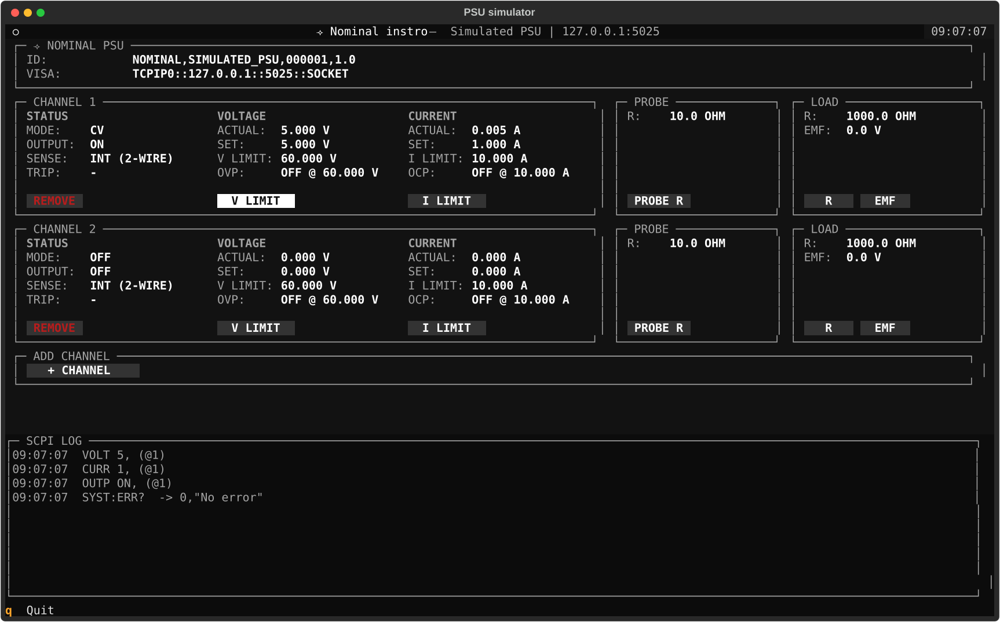

Simulated Instruments#
Try and test instro with no hardware: virtual instruments that run in-process, or bundled SCPI simulators
Virtual instruments#
The quickest way to try instro: a virtual driver simulates readings in-process, with no hardware, server, or second terminal. It works with every method of its instrument class.
from instro.dmm import InstroDMM
from instro.dmm.drivers import VirtualDMM
with InstroDMM(name="dmm", driver=VirtualDMM()) as dmm:
print(dmm.read_dc_voltage().latest)
Virtual drivers: VirtualDMM. In a JSON config, use "driver": {"connection_type": "virtual", "name": "VirtualDMM"}.
SCPI simulators#
instro ships local SCPI simulators for select instrument categories, so you can develop and test without owning the physical hardware. Each simulator runs as a TCP server and pairs with a Simulated<Category> driver:
from instro.psu import InstroPSU
from instro.psu.drivers import SimulatedPSU
with InstroPSU(
name="bench_psu",
driver=SimulatedPSU("TCPIP0::127.0.0.1::5025::SOCKET"),
num_channels=1,
) as psu:
psu.set_voltage(5.0, channel=1)
PSU simulator#
The PSU simulator is a local SCPI server for development, tests, and demos. It listens on a TCP socket, exposes a programmable power-supply command set, and includes a terminal UI for editing channel loads, probe resistance, and channel limits while your code is running.
Quickstart#
Start the simulator in one terminal:
python -m instro.psu.scpi_sim_server
It binds to 127.0.0.1:5025 by default. If you are working from a source checkout, run the same command through uv:
uv run python -m instro.psu.scpi_sim_server
Connect from another terminal or script with the SimulatedPSU driver. This small Python client opens an InstroPSU, configures channel 1, and reads voltage and current measurements:
from instro.psu import InstroPSU
from instro.psu.drivers import SimulatedPSU
with InstroPSU(
name="bench_psu",
driver=SimulatedPSU("TCPIP0::127.0.0.1::5025::SOCKET"),
num_channels=2,
) as psu:
psu.set_voltage(5.0, channel=1)
psu.set_current_limit(1.0, channel=1)
psu.output_enable(True, channel=1)
voltage = psu.get_voltage(channel=1)
current = psu.get_current(channel=1)
print(f"V: {voltage.latest:.3f} V")
print(f"I: {current.latest:.3f} A")
psu.output_enable(False, channel=1)
Use CLI flags to change the bind address, port, or initial channel count:
python -m instro.psu.scpi_sim_server --host 127.0.0.1 --port 5025 --channels 2
Usage#
The simulator runs a terminal UI while the TCP server listens in the background. The UI is organized by panel header.

Filled labels are selectable actions. Use the arrow keys to move between controls. Focused actions use a light highlight. Press Enter to select an action, Escape to close an edit prompt, and q to quit.
PSU#
The ⟢ NOMINAL PSU panel shows the simulator identity and VISA resource string. Use the resource string when driver code connects to the simulator.
Channel#
Each CHANNEL panel shows the live state for one output. The panel is split into status, voltage, and current sections.
Header |
Functionality |
|---|---|
STATUS |
Shows output mode, output state, sense mode, and protection trips. Select REMOVE to delete the channel from the simulator. |
VOLTAGE |
Shows terminal voltage, programmed voltage, voltage limit, OVP state, and OVP level. Select V LIMIT to edit the channel voltage ceiling. |
CURRENT |
Shows output current, programmed current limit, current limit, OCP state, and OCP level. Select I LIMIT to edit the channel current ceiling. |
Changing V LIMIT or I LIMIT runs *RST. The output turns off, programmed voltage and current return to zero, protection state turns off, and OVP/OCP levels return to the configured V/I limits.
Probe#
The PROBE panel shows sense lead resistance. Select PROBE R to edit the probe resistance in ohms.
Load#
The LOAD panel shows the external load model. Select R to edit load resistance in ohms. Select EMF to edit the series electromotive force in volts.
+ channel#
The + CHANNEL panel adds a new output channel with the next available channel ID.
SCPI log#
The SCPI LOG panel records incoming commands, responses, and queued errors. It is read-only.
Programming guide#
Brackets mark optional SCPI path components. For example, [SOURce:]VOLTage[:LEVel] accepts VOLT, VOLT:LEV, SOUR:VOLT, and SOUR:VOLT:LEV.
Angle brackets mark command arguments. They are notation only; do not include the angle brackets in the command.
<NRf+>is a positive flexible numeric value, such as0,1.25, or1e-3.<literal|literal>is one literal value from the listed options.
The pipe character (|) means OR. For example, <LOC|REM> accepts LOC or REM, and <NRf+|MIN|MAX> accepts one numeric value, MIN, or MAX. Do not send the pipe character in the command.
MIN maps to 0. MAX maps to V LIMIT for voltage and OVP commands, and I LIMIT for current and OCP commands. Do not send MIN or MAX to queries.
Defaults and reset#
On startup and after *RST, each channel uses the reset operating state:
Setting |
Reset value |
|---|---|
Programmed voltage |
|
Current limit |
|
Output state |
|
OVP state |
|
OCP state |
|
OVP level |
|
OCP level |
|
*RST preserves simulator configuration, including channel count, channel IDs, load resistance, series EMF, probe resistance, sense mode, and configured channel limits.
Error queue#
Errors are queued and returned one at a time by SYSTem:ERRor?. The simulator can emit these error codes:
Code |
Message |
Cause |
|---|---|---|
|
|
The queue is empty |
|
|
A query received an argument |
|
|
A command was sent without a required argument |
|
|
The command header is not supported |
|
|
The command targets a channel that does not exist |
|
|
A numeric argument could not be parsed |
|
|
A numeric input is outside its accepted range |
|
|
A literal argument is not accepted for that command |
|
|
Programmed voltage is above the OVP level |
|
|
Current limit is above the OCP level |
|
|
OVP level is below programmed voltage |
|
|
OCP level is below current limit |
|
|
OCP tripped while enabled |
|
|
OVP tripped while enabled |
Common commands#
*IDN? |
|
| Query simulator identity | Response: String |
*RST |
|
| Reset channel operating state and clear errors | Response: None |
*CLS |
|
| Clear the error queue | Response: None |
MEASure subsystem#
MEASure:CURRent? |
|
| Measure output current | Response: Number |
MEASure:VOLTage? |
|
| Measure output voltage | Response: Number |
OUTPut subsystem#
OUTPut[:STATe] <0|1|OFF|ON> |
|
| Enable or disable output | Response: None |
OUTPut[:STATe]? |
|
| Query output state | Response: 0 or 1 |
OUTPut:PROTection:CLEar |
|
| Clear latched OVP and OCP faults | Response: None |
OUTPut:PROTection:TRIPped? |
|
| Query latched OVP or OCP fault state | Response: 0 or 1 |
SOURce subsystem#
[SOURce:]CURRent[:LEVel][:IMMediate][:AMPLitude] <NRf+|MIN|MAX> |
|
| Set current limit | Response: None |
[SOURce:]CURRent[:LEVel][:IMMediate][:AMPLitude]? |
|
| Query current limit | Response: Number |
[SOURce:]CURRent:PROTection[:LEVel] <NRf+|MIN|MAX> |
|
| Set OCP level | Response: None |
[SOURce:]CURRent:PROTection[:LEVel]? |
|
| Query OCP level | Response: Number |
[SOURce:]CURRent:PROTection:STATe <0|1|OFF|ON> |
|
| Enable or disable OCP | Response: None |
[SOURce:]CURRent:PROTection:STATe? |
|
| Query OCP state | Response: 0 or 1 |
[SOURce:]VOLTage[:LEVel][:IMMediate][:AMPLitude] <NRf+|MIN|MAX> |
|
| Set programmed voltage | Response: None |
[SOURce:]VOLTage[:LEVel][:IMMediate][:AMPLitude]? |
|
| Query programmed voltage | Response: Number |
[SOURce:]VOLTage:PROTection[:LEVel] <NRf+|MIN|MAX> |
|
| Set OVP level | Response: None |
[SOURce:]VOLTage:PROTection[:LEVel]? |
|
| Query OVP level | Response: Number |
[SOURce:]VOLTage:PROTection:STATe <0|1|OFF|ON> |
|
| Enable or disable OVP | Response: None |
[SOURce:]VOLTage:PROTection:STATe? |
|
| Query OVP state | Response: 0 or 1 |
SYSTem subsystem#
SYSTem:ERRor? |
|
| Pop one error from the error queue | Response: code,"message" |
SYSTem:SENSe[:STATe] <LOC|REM> |
|
| Select local or remote sense | Response: None |
SYSTem:SENSe[:STATe]? |
|
| Query sense mode | Response: LOC or REM |
DMM simulator#
The DMM simulator is a local SCPI server for development, tests, and demos. It listens on a TCP socket and exposes a digital-multimeter command set: function switching plus the five primary measurements (DC/AC voltage, DC/AC current, and two-wire resistance). Each function measures a configurable stimulus value returned with Gaussian noise, so repeated reads look like a real bench instrument.
Unlike the PSU simulator, the DMM simulator is headless: there is no terminal UI. Set stimulus values with CLI flags at startup, or through the Python API when embedding the simulator in tests.
Quickstart#
Start the simulator in one terminal:
python -m instro.dmm.scpi_sim_server
It binds to 127.0.0.1:5026 by default. If you are working from a source checkout, run the same command through uv:
uv run python -m instro.dmm.scpi_sim_server
Connect from another terminal or script with the SimulatedDMM driver. This small Python client opens an InstroDMM, switches functions, and reads measurements:
from instro.dmm import InstroDMM
from instro.dmm.drivers import SimulatedDMM
with InstroDMM(
name="bench_dmm",
driver=SimulatedDMM("TCPIP0::127.0.0.1::5026::SOCKET"),
) as dmm:
print(f"V: {dmm.read_dc_voltage().latest:.4f} V")
print(f"R: {dmm.read_resistance().latest:.1f} ohm")
Use CLI flags to change the bind address, port, or the stimulus each function measures:
python -m instro.dmm.scpi_sim_server --port 5026 --dc-voltage 3.3 --resistance 4700
Stimulus model#
The stimulus is the simulator’s stand-in for the physical quantity on the probes (the DMM analog of the PSU simulator’s load model). Each measurement function has one stimulus value, and every measurement returns that value with Gaussian noise (±0.5% at 3 standard deviations).
Function |
CLI flag |
Default |
|---|---|---|
DC voltage |
|
|
AC voltage |
|
|
DC current |
|
|
AC current |
|
|
Resistance |
|
|
When embedding the simulator in Python (for example in tests), construct the server in-process and set stimulus values at runtime:
from instro.dmm.scpi_sim_server import (
FUNCTION_RESISTANCE,
SimulatedDMM,
SimulatedDMMServer,
)
sim = SimulatedDMM()
server = SimulatedDMMServer(sim, port=0) # port 0 = pick a free port
server.start()
print(f"TCPIP0::127.0.0.1::{server.port}::SOCKET")
sim.set_stimulus(FUNCTION_RESISTANCE, 4700.0) # change what the "probes" see
# ... drive it with SimulatedDMM / InstroDMM ...
server.shutdown()
Stimulus values persist across *RST: reset returns the instrument state (active function, error queue) to defaults, but the simulated physical world stays put.
Programming guide#
Brackets mark optional SCPI path components. For example, [SENSe:]FUNCtion accepts FUNC, FUNCTION, and SENS:FUNC. Keywords match in short or long form, in any case.
Command |
Functionality |
|---|---|
|
Returns |
|
Resets the active function to DC voltage and clears the error queue. Stimulus values are preserved. |
|
Clears the error queue. |
|
Pops the oldest queued error, or |
|
Sets the active function: |
|
Returns the active function, quoted (e.g. |
|
Sets the active function to DC voltage. Same pattern for |
|
Switches to the function and returns a noisy measurement of its stimulus. Same pattern for the other four functions. |
|
Returns a noisy measurement using the active function. |
Unknown headers queue -113,"Undefined header"; an unknown function name queues -224,"Illegal parameter value". The SimulatedDMM driver checks SYST:ERR? after every transaction and raises on any queued error.